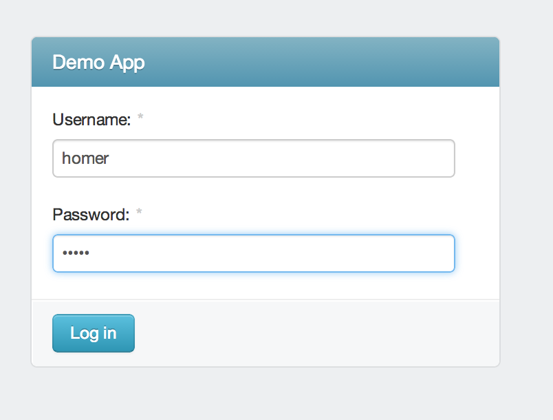
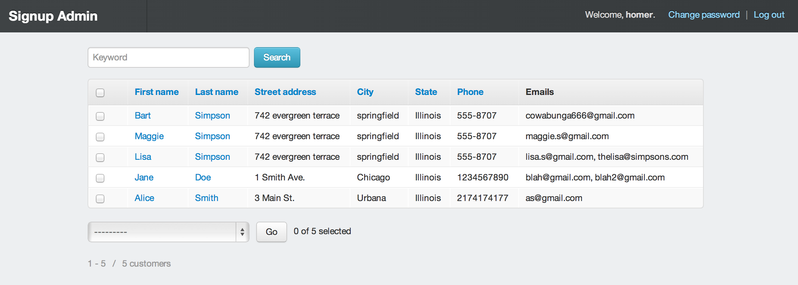
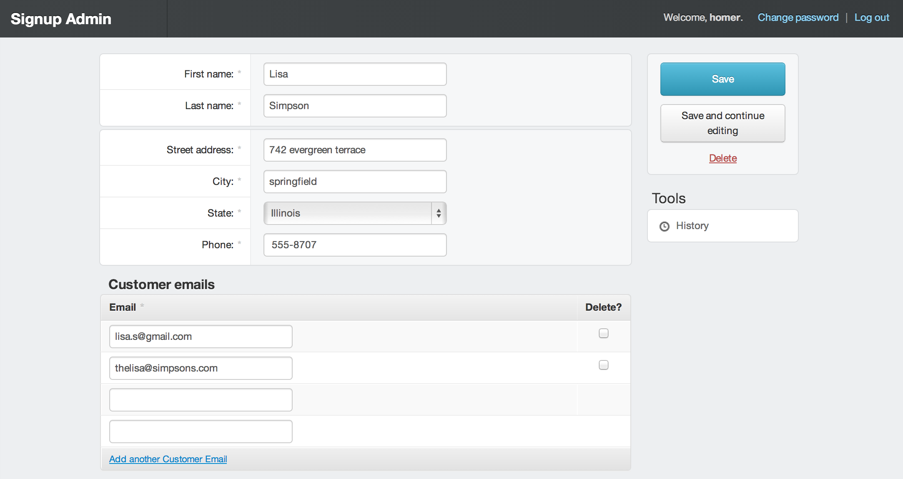

Small demo of single-page web application with a contact form for customers and an administrative interface for admin users to manage (display, search, edit, delete) customers’ information. The form for customers contains fields for contact information. Customers should be able to enter multiple email addresses.
Python/Django/SQLite (development version)
The front end (customer contact information form) is responsively styled using Bootstrap and Django Bootstrap Toolkit. The admin interface (list of users, change form for individual users, login) is responsively styled using Bootstrap and Django Suit, with some customization.
Clone the repository.
$ git clone git@github.com:gnarlinsky/ext_demo.git
To avoid dependency issues, create a virtualenv and install the required packages.
Inside whereever you keep your virtualenv’s:
$ virtualenv ve --no-site-packages
$ source ve/bin/activate # activate the virtual environment
Install the requirements:
$ cd ext_demo/mysite/
$ pip install -r requirements.txt
Create the database and load the initial data:
$ python manage.py syncdb
$ python manage.py loaddata app/fixtures/initial.json
Run the Django development server:
$ python manage.py runserver
Go to [http://localhost:8000/signup](http://localhost:8000/signup) to see interface for customers, or to [http://localhost:8000/admin](http://localhost:8000/signupadmin) to see the administrative interface. Log in with username homer and password homer.
Note that manage.py syncdb creates a database, so if you would like to start fresh, make sure to delete it. Assuming you’re still in the same directory (ext_demo/mysite/):
$ rm mysite_config_root/default.db
The script cover.sh (in the mysite directory, on the same level as manage.py) runs the tests (see app.tests) and determines test coverage, with detailed HTML results.
$ ./cover.sh
Creating test database for alias 'default'...
TestCase AdminTests
test_clean: Test that if the Emails ('all_emails') field does not contain at
least one valid email address, the correct error is returned.
TestCase HelpersTests
test_helpers:
Test that valid email addresses are parsed from string.
Is empty string parsed correctly?
Is a single non-email string parsed correctly?
< . . . omitting output . . . >
----------------------------------------------------------------------
Ran 30 tests in 0.016s
OK
Destroying test database for alias 'default'...
Name Stmts Miss Cover Missing
--------------------------------------------
app/__init__ 0 0 100%
app/admin 29 11 62% 19-28, 68
app/forms 19 0 100%
app/helpers 4 0 100%
app/models 26 0 100%
app/views 25 16 36% 13, 19-38
--------------------------------------------
TOTAL 103 27 74%
HTML results are in htmlcov/index.html
Note
Cover.sh - The line open htmlcov/index.html opens the HTML coverage information with your system’s default browser. Note this may only work in OS X, where the open command opens directories and files with the default application for the file’s extension — so you might want to comment out that statement.
After logging in at http://localhost:8000/admin/ (username and password “homer”),
you will be taken to the main admin screen, where you can view the current signed-up customers. Here you can sort the columns and search on any field.
Clicking on a name on the main admin screen (see above) takes you to that customer’s individual page. Here you can edit the customer’s information.
Documentation created with Sphinx, a Python document generator.